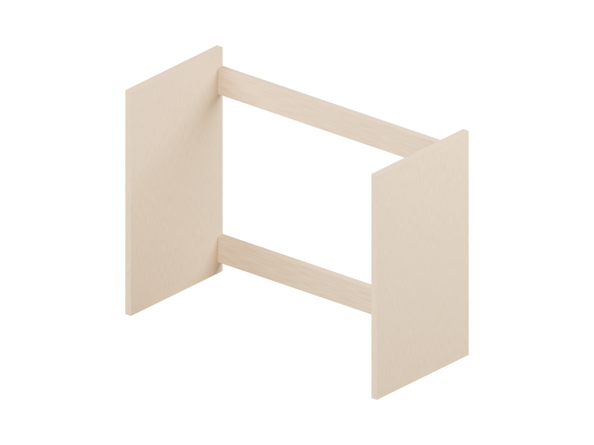
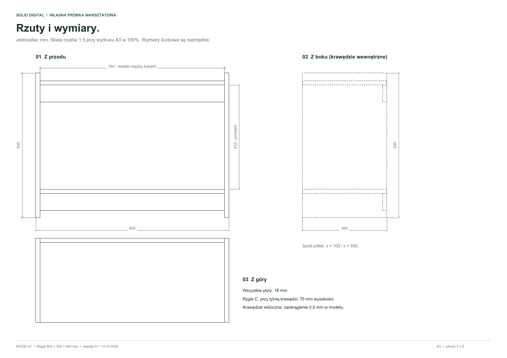
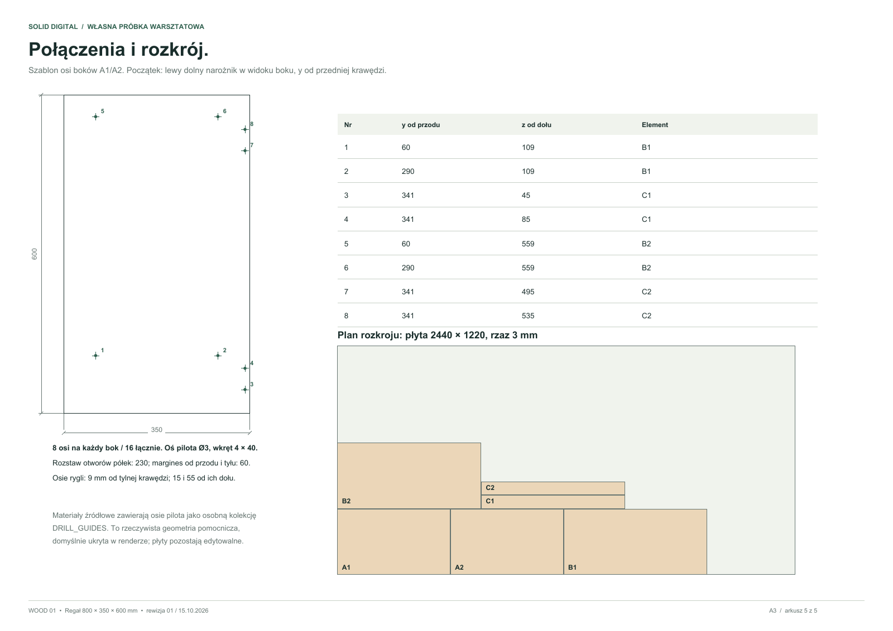
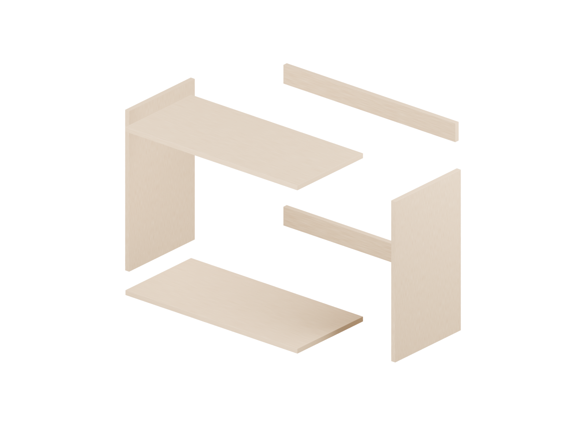
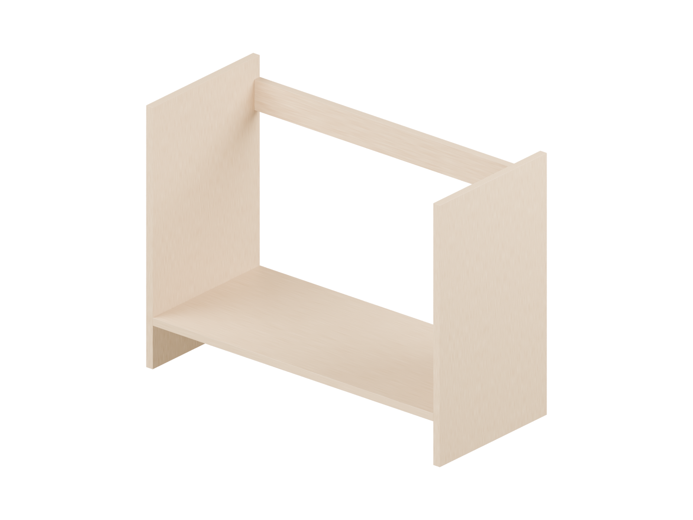
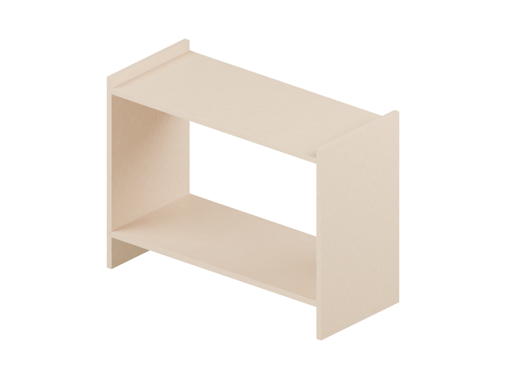

01. Boki i rygle
Ustawienie boków i obu tylnych rygli.
Własny regał demonstracyjny. Jeden model 3D jest wspólnym źródłem rzutów, wymiarów, listy elementów i etapów montażu.
Pięć arkuszy A3 obejmuje rzuty z przodu, z boku i z góry, rozstrzelenie, listę elementów, cztery etapy montażu oraz położenie 16 osi połączeń. Rzuty na arkuszu 2 mają skalę 1:5 przy wydruku A3 w 100%.


W źródle Blender znajdują się nazwane elementy A1–C2, materiał proceduralny, 16 łączników i osobna, ukryta w renderze kolekcja osi pilota Ø3. Osie są geometrią pomocniczą; nie udają wykonanych otworów ani gwintów.
| Element | Szt. | Wymiar [mm] |
|---|---|---|
| A / boki | 2 | 600 × 350 × 18 |
| B / półki | 2 | 764 × 350 × 18 |
| C / rygle | 2 | 764 × 70 × 18 |


Ustawienie boków i obu tylnych rygli.

Spód półki B1 na wysokości 100 mm.

Spód półki B2 na wysokości 550 mm.
16 połączeń, wymiary i przekątne.